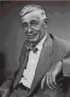

|
|
| 当前位置：电脑报电子版 > 1999 年 > 46 期 > 综合报道 > 硅谷老英雄 |
| 《 硅谷老英雄 》 |
| 从1939年休利特与帕卡德在享有“硅谷之父”美誉的弗雷德里克·特曼（Frederick Terman）的鼓励和指导下创立“惠普”公司的那天起，经过60年的风雨兼程，今天，硅谷及周边地区的高科技公司的市场价值已与整个法国的股市价值相当。 当我们对今天硅谷的辉煌业绩叹为观止的时候，请不要忘记那些为硅谷今日的繁荣呕心沥血打下坚实基础，为硅谷做出过开拓性工作和巨大贡献的人们。他们就是在科学工程和商业经济这两个迥然不同的战场上戎马一生，为硅谷的诞生与辉煌奋斗不息的——硅谷老英雄们。 范内瓦·布什——“信息时代的教父”  范内瓦·布什（Vannevar Bush），这位具有6个不同学位的科学家、教育家和政府官员与本世纪许多著名的事件都有着千丝万缕的联系，其中包括“曼哈顿计划”、硅谷、国际互联网等。倒转信息时代的时钟，无论你审视信息技术发展史的哪个领域，范内瓦·布什都是在那里留下过足迹的具有远见的先驱性人物。正如历史学家迈克尔·雪利（Michael Sherry）所言，“要理解比尔·盖茨和比尔·克林顿的世界，你必须首先认识范内瓦·布什。”正是因其在信息技术领域多方面的贡献和超人远见，范内瓦·布什获得了“信息时代的教父”的美誉。布什的一生与麻省（兼指马萨诸塞州和麻省理工学院）结下了不解之缘。1890年3月他出生于美国马萨诸塞州的埃弗尔内特（Everett），在为科学和教育事业贡献了一生之后，布什于1974年6月在马萨诸塞州的贝尔蒙特（Belmont）逝世。从1919年起直到1971年，布什长期在著名的麻省理工学院（MIT）工作和教学。从1930年开始，在MIT担任电子工程学教授的布什和一个研究小组开始着手设计能够求解微分方程的“微分分析机”的工作，造出世界上首台模拟电子计算机。这一开创性工作为二战后数字计算机的诞生扫清了道路。40年代早期，作为罗斯福总统的科学顾问，范内瓦·布什组织和领导了制造第一颗原子弹的著名的“曼哈顿计划”。其后，他先后参与了从氢弹的发明、登月飞行直到“星球大战计划”的众多重大的科学技术工程。美国政府依据布什的建议和构想批准成立的国家科学基金会（NSF）和高级研究规划署（ARPA）等科研机构保证了美国在尖端科技领域的长期领先地位。 在信息产业领域里，范内瓦·布什更是功勋卓著。美国国内两个著名的高科技工业园区——加州的“硅谷”和波士顿128号公路的“高科技走廊”的诞生都凝结了布什的心血。被人称为“硅谷之父”的弗雷德里克·特曼在MIT获得电子学博士学位的导师不是别人正是布什。1939年诞生的惠普公司是特曼的胜利，也是布什的胜利。从此范内瓦·布什的名字与硅谷结下了不解之缘。 范内瓦·布什还被称为“超文本之父”，早在40年代他就预见到了PC和Web的出现。1945年，在那篇著名的论文《如我们所想》（As We May Think）中，布什设想了一种能够存储大量信息，并能在相关信息之间建立联系的机器。这个想象正是现在的Internet。后来，在布什发表的另一篇论文中他又提出这种机器（媒体）能够把视频和声音集成在一起。而这恰恰是今天为人们获取信息提供巨大方便的Web的核心思想。虽然，布什的这些机器最终没有制造出来，但是他那天才构想深深影响了诸如泰德·尼尔森（Ted Nelson）这样的后来者。 正是基于对范内瓦·布什如此深邃的洞察力和预见力的钦佩，在1974年他逝世以前，计算技术前沿的许多科学家都尊敬地称他为“信息时代的教父”。 比尔·休利特与大卫·帕卡德——“惠普之道” 总部设在美国加利福尼亚州帕罗阿尔托(Palo Alto)的惠普公司（HP）在全球各地拥有超过10万名员工，生产24，000多种产品，公司1998财务年度营业纯收入达到471亿美元。惠普一直就以务实、稳健的企业文化著称于世。惠普公司成立于1939年，创始人是戴维·帕卡德（Dave Packard）和比尔·休利特（Bill Hewlett）。公司的名称HP就是将两人姓氏的首字母拼凑在一起得来的。有趣的是，当时在决定谁的姓应该放在前面的时候，这两位技术天才是通过抛硬币来决定的。休利特的运气似乎好一些，他的姓就被放在了前面。 30年代电子阻容频率振荡器的发明成了惠普成立的契机，休利特成功地解决了这个技术的稳定性问题和生产问题。其后他的导师特曼通过各种渠道筹措了1000美元的启动资金。1938年秋天，在通用电气公司供职的帕卡德也辞去工作回来和休利特一起开创属于他们自己的事业。这一对配合默契、友谊深厚的好友在加州帕洛阿尔托镇爱迪生大街367号的一间简易车库里，开始研制和生产电子产品。次年，以两人姓氏命名的休利特－帕卡德（Hewlett Packard）公司（即惠普）正式成立，这也标志着硅谷的正式起步。 戈登·摩尔——“摩尔定律” 在IT行业有一个神话，这个神话就是一条定律把一个企业带到成功的顶峰，这个定律就是 “摩尔定律”。信息产业几乎严格按照这个定律以指数方式领导着整个经济发展的步伐，这个定律的发现者不是别人，正是世界头号CPU生产商Intel公司的创始人之一的戈登·摩尔（Gordon Moore）。摩尔1929年出生在美国加州的旧金山。曾获得加州大学伯克利分校的化学学士学位，并且在加州理工大学（CIT）获得物理和化学两个博士学位。50年代中期他和集成电路的发明者罗伯特·诺伊斯（Robert Noyce）一起，在威廉·肖克利半导体公司工作。后来，诺伊斯和摩尔等8人集体辞职创办了半导体工业史上有名的仙童半导体公司（Fairchild Semiconductor）。仙童成为现在的Intel和AMD之父。 1968年，摩尔和诺伊斯一起退出仙童公司，创办了Intel。Intel致力于开发当时计算机工业尚未开发的数据存储领域，公司生产的第一个重要产品Intel 1103存储芯片于70年代初上市。1972年，Intel销售额就达2340万美元。从1982年起的过去10年间，微电子技术共有22项重大突破，其中由Intel公司开发的就有16项之多。 戈登·摩尔从1968年Intel诞生之日起就是这家传奇性公司的高级领导之一，1974年在诺伊斯卸任之后，时任副总裁的摩尔正式登上了总裁和首席执行官的宝座，开始扮演驾驶Intel巨轮的“船长”角色。在摩尔主导Intel的十几年时间里（1974～1987年），以PC为代表的个人计算机工业萌芽并获得了飞速的发展。摩尔以其敏锐的眼光，准确地预测到了PC的成功。他果断地做出决定，Intel进行战略转移，专攻微型计算机的“心脏”部件——CPU。随着PC在全球范围获得的巨大成功，提供PC核心部件的Intel从一个存储器制造商长成为一个更加辉煌的Intel。戈登·摩尔正是这场变革和进步的最大推动者和胜利者。 在高科技的IT领域，奋斗过十年的人物就可以被人称为老兵了。那么闪耀了40多年光芒的摩尔又该被称为什么呢？戈登·摩尔不但是一个老兵，他更是一位信息产业的偶像。今天，虽然担任Intel荣誉董事主席的摩尔已经淡出了日常的管理事务，但是他还是一周数日出现在Intel总部的大楼里。 |
| 下载本期推荐软件 | 页 首 |
| 《电脑报》版权所有，电脑报网站编辑部设计制作发布 |